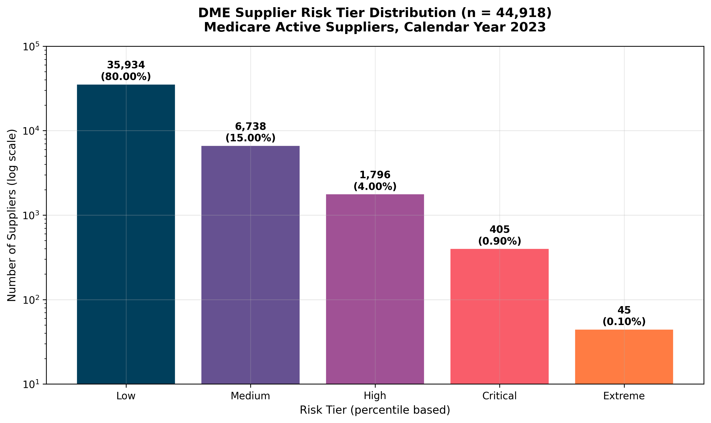
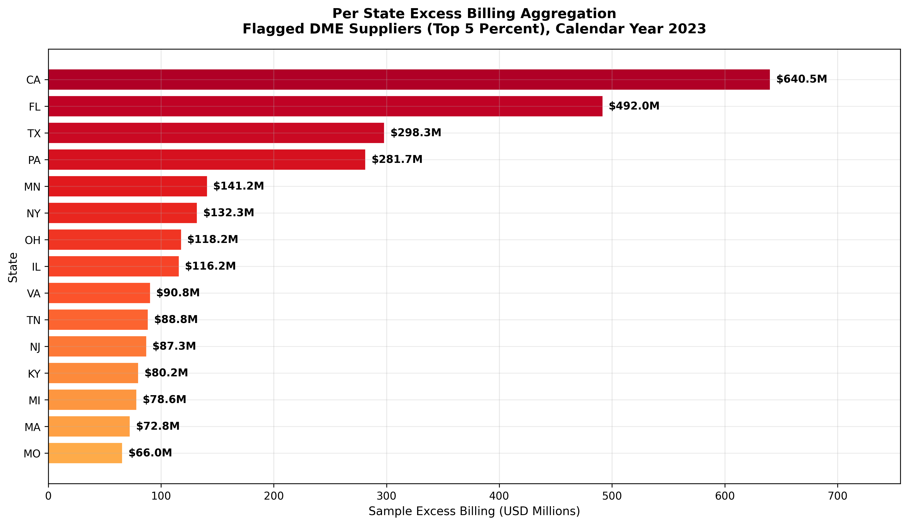
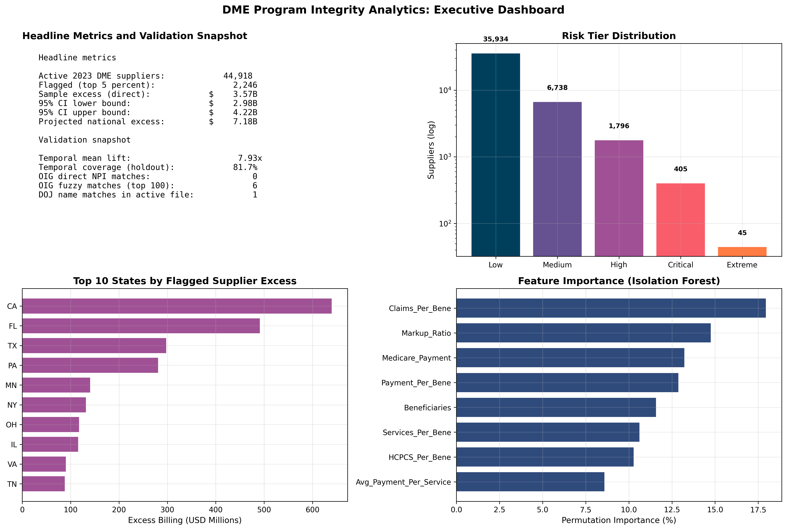

DME Program Integrity Analytics
A dual method risk scoring framework for Medicare durable medical equipment suppliers covering 2021 through 2023. The system combines per beneficiary payment anomaly detection against state median baselines with isolation forest machine learning, projects sample excess to a national figure using CMS reported totals, and computes bootstrap confidence intervals on every aggregate.
Methodology
The analytical universe consists of 198,621 supplier year records across the 2021, 2022, and 2023 CMS Medicare DMEPOS Public Use Files, with 44,918 active suppliers in 2023 defined by positive beneficiary counts. Service level granularity expands to 1,454,474 supplier HCPCS combinations across the three years.
The risk framework computes payment per beneficiary for each supplier and compares against the state level median. Excess billing is calculated as the positive difference between supplier payment per beneficiary and the state median, multiplied by the supplier beneficiary count. Suppliers in the top five percent of combined risk score constitute the flagged set.
National projection scales sample excess to a national figure using the ratio of CMS reported total DMEPOS payments (11.2 billion dollars) to the sample Medicare payment total (5.566 billion dollars). Bootstrap confidence intervals are computed across one thousand iterations resampling with replacement.
Key findings
The flagged top five percent (2,246 suppliers) accounts for 3.567 billion dollars in directly observed sample excess. Projected to the national DMEPOS universe, this represents 7.176 billion dollars in annual excess.
The bootstrap ninety five percent confidence interval on the sample excess is 2.98 to 4.22 billion dollars, indicating stable estimation across resamples.
The supplier tier distribution stratifies risk into Low (35,934 suppliers at 80 percent), Medium (6,738 at 15 percent), and High plus Critical plus Extreme (the flagged top 5 percent). The tier system corrects a prior off by one error and is now consistent with the documented tier boundaries.
Cross referencing the flagged set against the HHS OIG List of Excluded Individuals and Entities yields a small direct match count, consistent with the broader finding that exclusion based labels capture only a fraction of program integrity risk.
Selected figures



Verification
Every numerical claim in this project traces to a persisted result file in the public rebuild repository. Independent reviewers can reproduce the supplier universe, the state level baselines, the risk scores, the flagged set, the national projection, and the bootstrap confidence intervals from the same CMS Medicare DMEPOS Public Use Files.